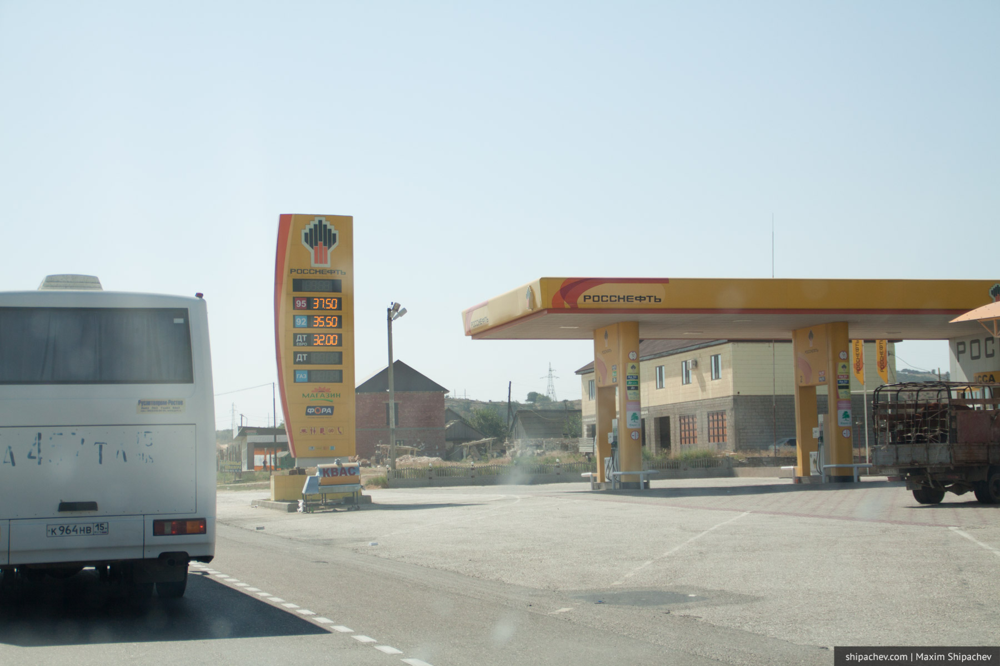
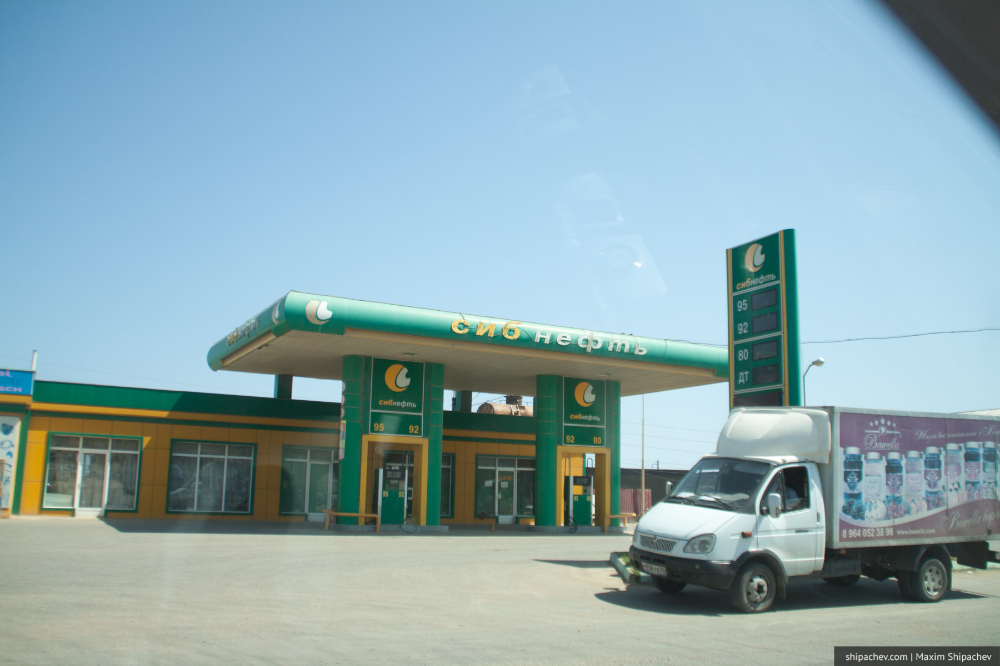
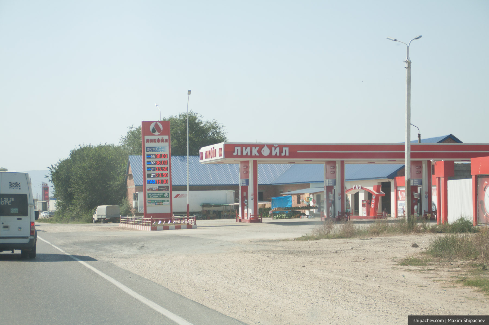
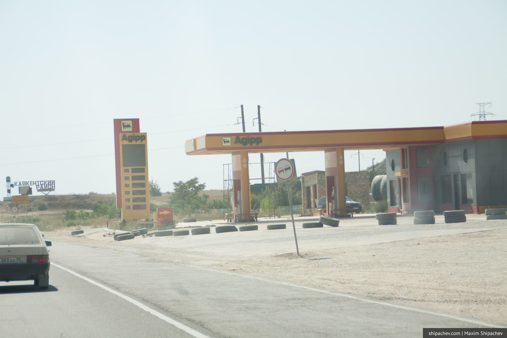
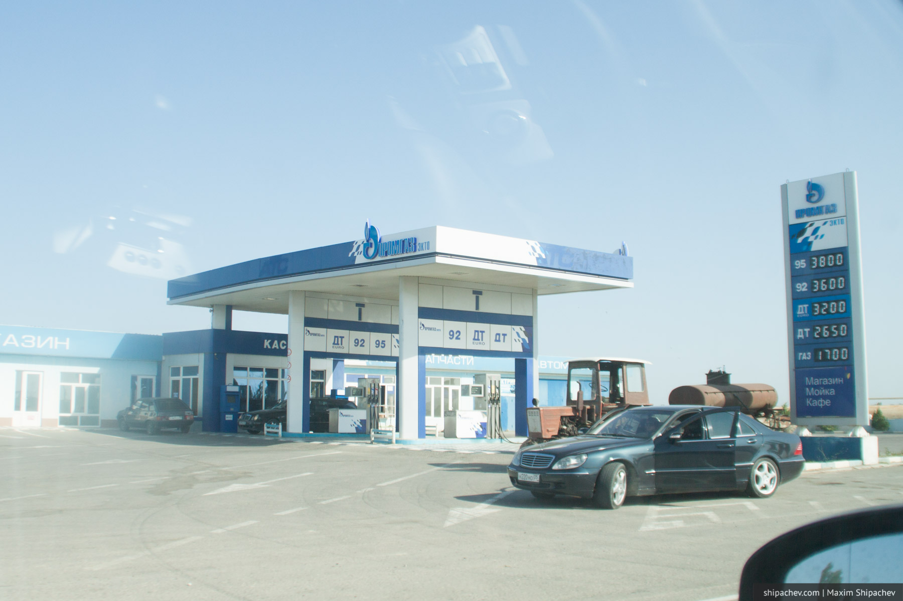
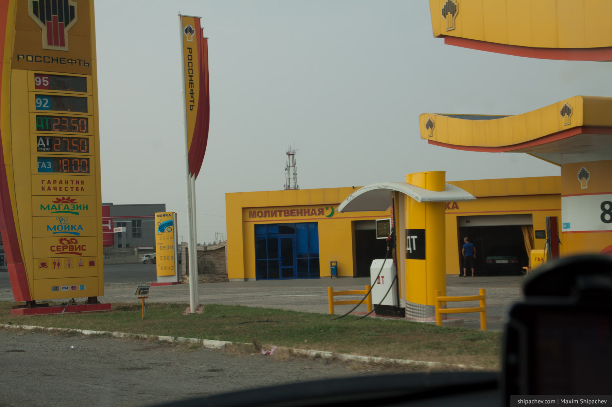
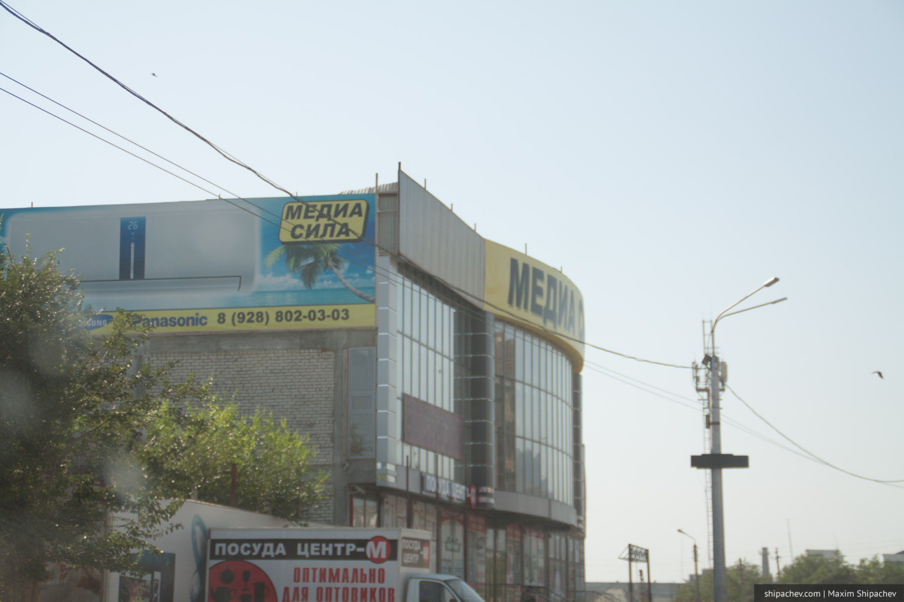

К хорошему привыкаешь. Человеку, который не покидает пределов Кемерова, сложно представить что обычная заправка Газпромнефти может быть настоящим островком цивилизации.
Но заправки Газпромнефти, если ехать на юго-запад, заканчиваются примерно на в Челябинской области. В Уфе их сменяют АЗС Башнефти, в Татарстане Татнефти, потом появляются вновь знакомые заправки, но это уже не Газпромнефть, а Газпром. АЗС хоть и похожи внешне, но бонусные карты Газпромнефти уже не работают. Кроме этого везде встречаются заправки Лукойла и Роснефти.
Ситуация становится неожиданной в Калмыкии и сюрреалистичной в Дагестане. Количество сетевых заправок превышает все разумные пределы. Но это только с первого взгляда. В Дагестане, как видно, свои сети.



На АЗС Лукойл у нас даже приняли карту настоящего Лукойл. Правда не начислили бонусы, а сделали скидку в 1 рубль с литра.


Есть ещё десяток разных вариаций и цветовых решений. А вот настоящих сетевых АЗС в Дагестане нет. Причём это не какие-то местные заправки с порванными шлангами и сомнительными бензоколонками. Это полноценные современные сети АЗС часто с магазином и молитвенными комнатами. В воровстве фирменного стиля АЗС нет никакого коммерческого умысла. Просто, вероятно, «абыч такой».

